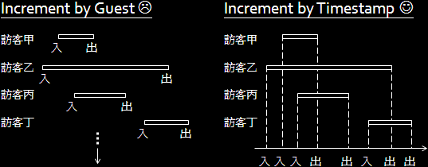

Incremental Method
程度★ 難度★
不積跬步，無以至千里。不積小流，無以成江海。《荀子》
Incremental Method
「遞增法」是符合電腦運作特性的方法。電腦執行程式，一次只做一個動作，完成了一件事才做下一件事。當一個問題太大太多時，化整為零、一個一個解決吧！
合抱之木，生於毫末；九層之臺，起於累土；千里之行，始於足下。謹以此句與大家共勉。
舉例：加總數字
無論電腦再怎麼強，還是得一個一個數字累加。
舉例：複製字串
無論電腦再怎麼強，還是得逐字複製。
舉例：選擇排序法（Selection Sort）
把第一小的數值找出來，放在第一個位置；再把第二小的數值找出來，放在第二個位置。一次找一個數字，如此下去就可以把所有數值按照順序排好了。
舉例：印出直角三角形
多字成行，多行成直角三角形。由細微的東西開始，一件一件組起來。
UVa 488 10038 10107 10370
舉例：宴會中訪客數目的極大值（Interval Partitioning Problem）
我們將原問題轉換成比較容易理解的形式。有一群訪客參加宴會，我們知道每一個人的進場時刻與出場時刻，請問宴會現場擠進最多人的時段。
換個角度想，如果在會場門口裝一支監視器，有訪客進入，會場就多一人，有訪客離開，會場就少一人。將所有訪客的留滯時段化整為零，逐步遞增，遞增的目標物是時刻，而不是訪客的索引值。
【註：這個技巧在中文網路上暱稱為「離散化」。】
另外還可以找出人最多的時段，就留給各位自行嘗試吧。
UVa 105 688 972 10613 10585 10963